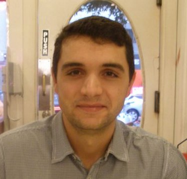

Contributors
Manabu Tsukada, Ph.D
He is an expert engineer at INRIA (France). He reseived Ph.D degree at MINES ParisTech (France) in 2011. He has studied in Jun Murai laboratory in Keio University (Japan) from September 2002 to May 2007. He got BS (2005) and MS (2007) from Keio University. His research interests are mobility support for next generation Internet (IPv6) and communications for intelligent vehicles.



José Santa, Ph.D
José Santa was born in Yecla (Murcia, Spain) on November 3th 1981. In 2004 he received the M.S. degree in Computer Science Engineering at the University of Murcia, Spain; in 2008 he received the M.S. degree in Advanced Information and Telematics Technologies; in 2009 he obtained his PhD in Computer Science at University of Murcia. Currently he is a researcher at Department of Information and Communication Engineering, at the same university. His research interests are vehicle communications, location-based services, positioning systems, electronic vehicle identification, and the intelligent transportation systems (ITS) field in general.
Satoshi Matsuura, Ph.D
He is an associate professor at NAIST, Japan. He is interested in overlay networks and large scale sensor networks. He also studies distributed Pub/Sub systems, DTN and etc. IEICE Transactions(member of editorial board, reviewers), IEICE Technical Committee on Internet Architecture(expert member). IEEE SAINT, COMPSAC international conference organizing committee(also PC member).
Organizations
Projects
ITSSv6 aims at developing a reference open-source IPv6 ITS Station stack available to European and national third parties using IPv6 for Internet-based communications in Field Operational Tests (FOTs) of Cooperative Systems.
The GeoNet project will contribute to the road safety by implementing a reference specification of a geographic addressing and routing protocol with support for IPv6 to be used to deliver safety messages between cars but also between cars and the roadside infrastructure.
Home Page »